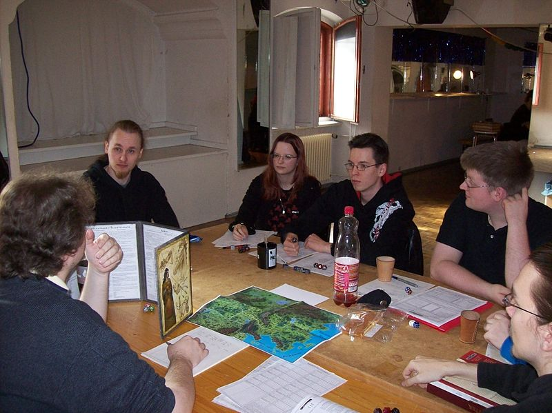

Most games follow the pattern established by the first published role-playing game, Dungeons & Dragons. Participants usually conduct the game as a small social gathering. One participant, called the Dungeon Master (DM) in Dungeons and Dragons, more commonly called the game master or GM, purchases or prepares a set of rules and a fictional setting in which players can act out the roles of their characters. This setting includes challenges for the player characters to overcome through play, such as traps to be avoided or adversaries to be fought. The full details of the setting are kept secret, but some broad details of the game world are usually given to the players. Games can be played in one session of a few hours, or across many sessions depending on the depth and complexity of the setting.
The players each create characters whose roles they will play in the game. As well as fleshing out the character's personal history and background, they assign numerical statistics to the character; these will be used later to determine the outcome of events in the game. Together, these notes tell the player about their character and his or her place in the game world.
The GM then begins the game by introducing and describing the setting and the characters. The players describe their characters' actions, and the GM responds by describing the outcome of those actions. Usually, these outcomes are determined by the setting and the GM's common sense; most actions are straightforward and immediately successful. For example, if a player has their character look around a room, the GM will describe the room; if they have their character leave, the GM will describe whatever they encounter outside the room.
The outcomes of some actions are determined by the rules of the game. For example, while looking around the room, a character may or may not notice an important object or secret doorway, depending on the character's powers of perception. This usually involves rolling dice, and comparing the number rolled to their character's statistics to see whether the action was successful. Typically, the higher the character's score in a particular attribute, the higher their probability of success. Combat is resolved in a similar manner, depending on the character's combat skills and physical attributes. In some game systems, characters can increase their attribute scores during the course of the game (or over multiple games) as the result of experience gained. There are alternate game systems which are diceless, or use alternate forms of randomization, such as the non-numerical dice of Fudge or a Jenga tower.
Games are of indefinite length, from a single brief session (usually completed in a few hours) to a series of repeated sessions that may continue for years with an evolving cast of players and characters. Play is often episodic and mission-centric, with a series of challenges culminating in a final puzzle or enemy that must be overcome. Multiple missions played with the same characters may be related to each other in a plot arc of escalating challenges. The exact tone, structure, pace and end (if any) vary from game to game depending on the needs and preferences of the players.